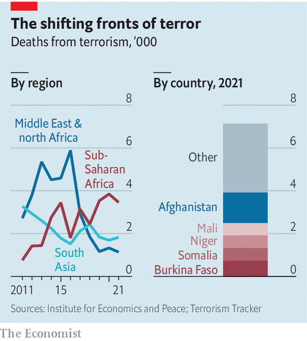

EVERY YEAR since 2017 more people have been killed in terrorist attacks in sub-Saharan Africa than in either South Asia or the Middle East and north Africa. By 2021 almost half of all those killed by terrorists globally were in sub-Saharan Africa, according to the Global Terrorism Index compiled by the Institute for Economics and Peace. Worst hit is the Sahel, a poorly governed strip of scrub south of the Sahara, which accounts for 35% of all deaths. One Sahelian group affiliated to al-Qaeda, Jama’at Nasr al-Islam wal Muslimin, is the fastest-growing terrorist group in the world.
This article appeared in the Middle East & Africa section of the print edition under the headline "Sahel"